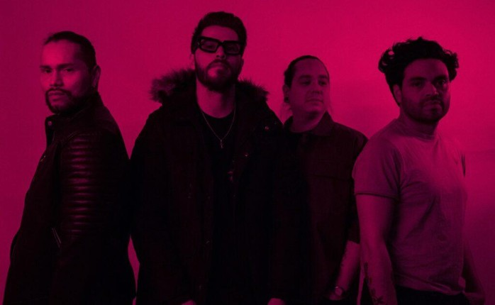
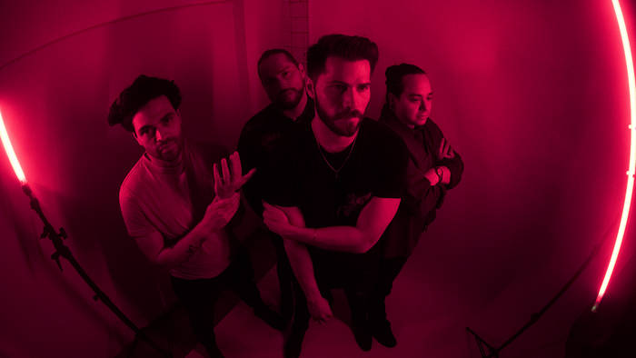

El proyecto capitalino Kartis Qatar está listo para cautivar con su más reciente sencillo, “Insomnia”. Este track, parte de su segundo álbum de larga duración, explora la dualidad entre la vigilia, los sueños y los excesos sociales.
Inspirado por el regional mexicano y fusionado con electrónica, “Insomnia” lidera la experimentación sonora con influencias que van desde los corridos tumbados hasta el reggae y el dembow, desafiando los límites del rock convencional.

ROMPER EL ROCK
“Somos un proyecto que rompe con el rock y sus esquemas de chamarritas de piel y botas. No buscamos pretender, buscamos una identidad regional latina que se abra paso por el mundo”.
Kartis Qatar se proyecta en una continua evolución. Para ellos, crear algo propositivo requiere absorber música de todos los géneros, creyendo firmemente en la identidad regional que solo otorga el territorio mexicano y latino.

La banda continuará lanzando sencillos a lo largo del año, detallando un sonido con pinceladas de hip hop y electrónica que promete un nuevo panorama para tus oídos. Sigue su pista en todas sus redes oficiales.